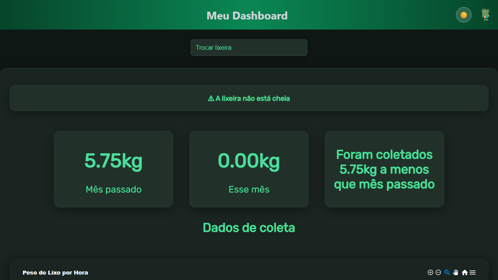
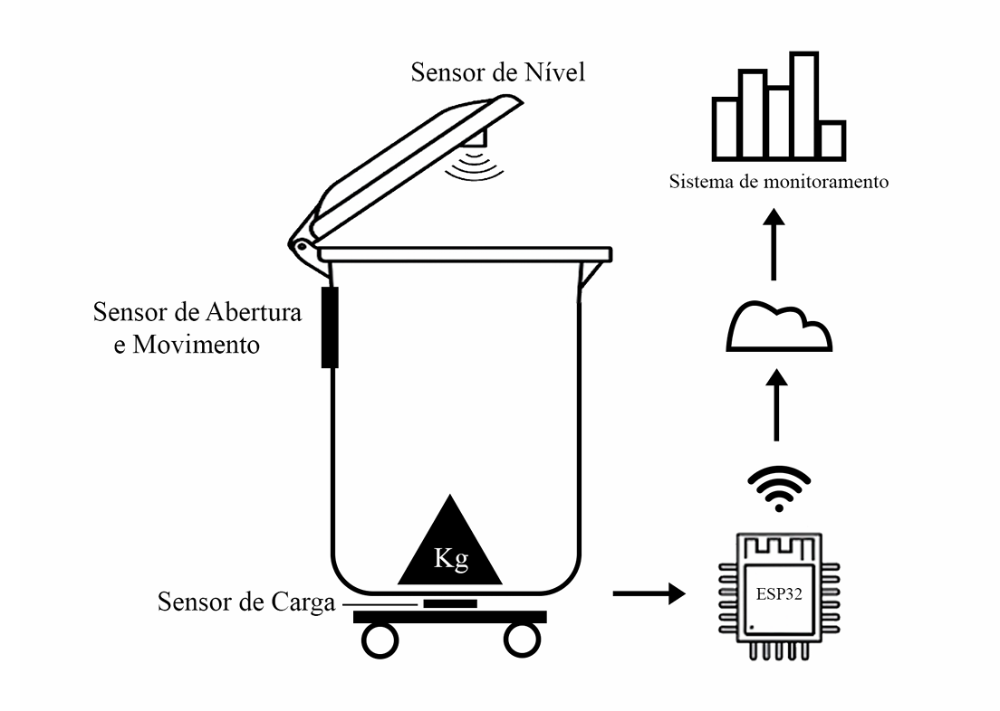
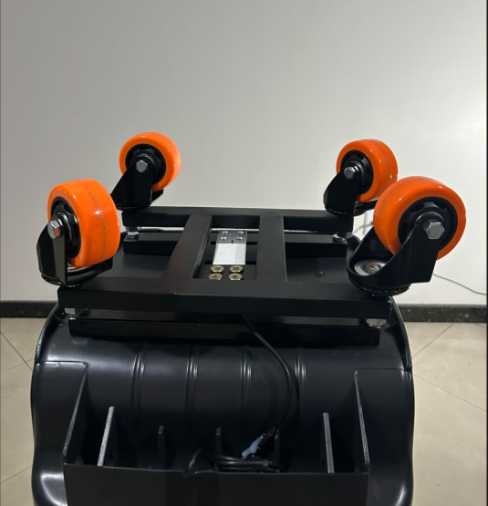
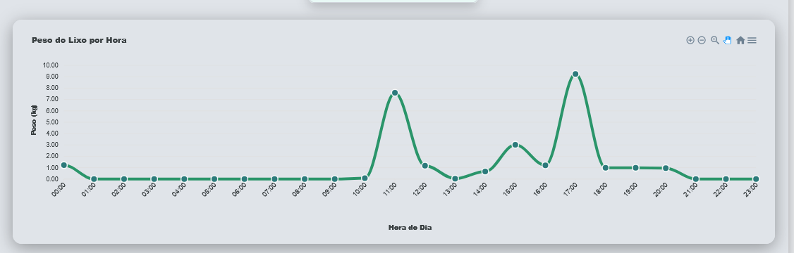
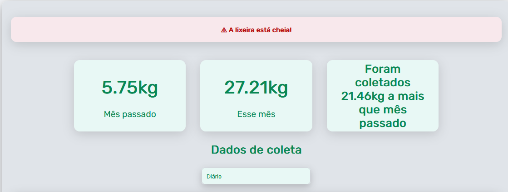
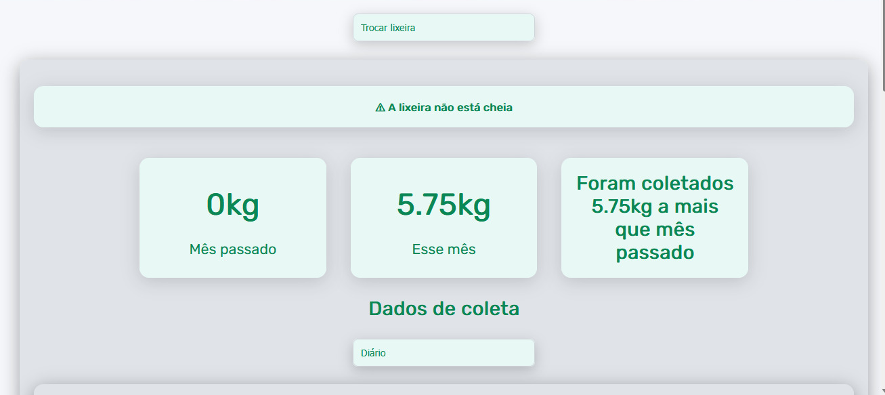
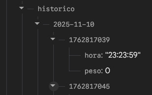

Teko Lixeira
Lixeira IoT, do Amazon Hacking ao TCC.

Contexto
O Teko Lixeira nasceu no Amazon Hacking 2025, um programa de extensão do CESUPA que reúne alunos de vários cursos, professores, empresas e a comunidade para criar soluções com impacto social e ambiental, com o apoio de empresas como a Vale e a Accenture. A ideia foi criada em conjunto pela equipe, formada por alunos de Ciência da Computação e de Engenharia da Computação. O protótipo foi exposto em um estande na COP 30, em Belém, onde a equipe apresentou o projeto aos visitantes em um pitch. Depois, o projeto virou tema de dois TCCs.
Desafio
Em Belém, a coleta de lixo enfrenta dificuldades, principalmente onde falta monitoramento. Caminhões e coletores seguem rotas fixas, sem saber quanto lixo há em cada lixeira, e empresas e órgãos públicos têm dificuldade de medir quanto resíduo produzem. Sem esses dados, não existem indicadores de sustentabilidade, e fica mais difícil tomar boas decisões.
Solução
Uma lixeira inteligente que pesa o lixo, avisa quando está cheia e envia os dados por Wi-Fi para a nuvem. Um painel web mostra tudo em tempo real: o peso ao longo do dia, o total coletado no mês e o aviso de lixeira cheia. A ideia é dar a quem cuida dos resíduos dados confiáveis para planejar a coleta e acompanhar o descarte, começando por condomínios, prédios corporativos e órgãos públicos.
Tecnologias
- C++: firmware do ESP32, que lê os sensores e envia os dados.
- JavaScript, HTML e CSS: o painel web.
- React: telas e atualização em tempo real.
- Firebase: banco de dados em tempo real.
- ESP32: microcontrolador com Wi-Fi que controla a lixeira.
Galeria






Equipe
- Igor Rafael Carvalho Gonçalves
- Marco Antônio Oliveira Machado
- Rafael Ponciano Vasconcelos Silva
- Lucas Alves Rodrigues
- Raissa Sousa de Oliveira